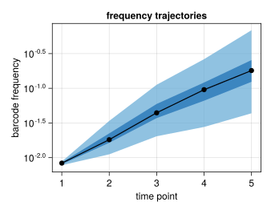
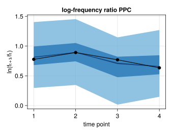

BayesFitness
Welcome to the documentation of BayesFitness.jl! The accompanying paper, Bayesian inference of relative fitness on high-throughput pooled competition assays, explains all of the biological and mathematical background needed to understand this package. Here, we only focus on how to use the package, assuming the user already understands the objective of inferring the posterior probability distribution of the relative fitness of mutant strains in a pooled competition assay.
The package is divided into modules. Here's a brief description of the content of each module, but please visit their respective documentations to understand what each module is intended for.
utils: Series of miscellaneous functions that make the data wrangling and processing much simpler.viz:Makie.jl-based module with useful plotting functions to display the data and the MCMC results for visual diagnostics.stats: Statistical functions used in the inference problem.model:Turing.jl-based Bayesian models used to infer the population mean fitness via the neutral lineages as well as the mutants' relative fitness.mcmc: The main module with which to perform the Markov-Chain Monte Carlo sampling of the posterior distributions.
Example inference
To get you going with the package, let's walk through a basic inference pipeline for one competition assay. Our ultimate goal consists of inferring the relative fitness for each of the mutant barcodes. To that end, we assume that the frequency time-series obeys the following equation
\[f_{t+1}^{(b)} = f_{t}^{(b)} \mathrm{e}^{\left(s^{(b)} - \bar{s}_t \right)\tau}, \tag{1}\]
where $f_{t}^{(b)}$ is the frequency of barcode $b$ at time $t$, $s^{(b)}$ is the relative fitness of this barcode, $\bar{s}_t$ is the population mean fitness at time $t$, and $\tau$ is the time interval between time $t$ and $t+1$.
The first step consists of importing the necessary packages.
We use import rather than the more common using command. We find it better to keep the project organized, but feel free to use whatever is more convenient for you!
# Import Bayesian inference package
import BayesFitness
# Import libraries to manipulate data
import DataFrames as DF
import CSVAfter having imported the libraries, we need to load our dataset into memory. This dataset is already in the format needed for BayesFitness.jl to work, so we don't have to modify anything.
# Import data
data = CSV.read("~/git/BayesFitness/test/data/data_example_01.csv", DF.DataFrame)Here you will replace "~/git/BayesFitness/test/data" with the directory where your data is stored, and "data_example_01.csv" with the name of the file containing the data. The resulting DataFrame looks something like this:
| BCID_x | barcode | name | count | time | neutral | count_sum |
|--------|-------------------------------------------------------|-------------------------|-------|------|---------|------------|
| 0 | TGATCAATCTACAAAAATATTTAATG_GAGTGAAACATGAATGGTATTCATCA | Batch1_1Day-T0_combined | 53 | 0 | FALSE | 543947 |
| 1 | CCGCCAATCCCGAACCCCGTTTCGCC_ACTCTAACGTGTAACTAATTTTGAGT | Batch1_1Day-T0_combined | 1213 | 0 | FALSE | 543947 |
| 2 | GACAGAAAAGCCAAATGGATTTACCG_ATGGGAACACGGAATGATCTTTTATT | Batch1_1Day-T0_combined | 17 | 0 | FALSE | 543947 |
| 3 | CCAACAAAACACAAATCTGTTGTGTA_TACTAAATAAGTAAGGGAATTCTGTT | Batch1_1Day-T0_combined | 19 | 0 | FALSE | 543947 |
| 4 | TATCGAAACCCAAAGAGATTTAATCG_ATGACAAACTTTAAATAATTTAATTG | Batch1_1Day-T0_combined | 23 | 0 | FALSE | 543947 |
| 5 | TATCGAAACCCAAAGAGATTTAATCG_CGATCAAAGACTAACTTATTTTGTGG | Batch1_1Day-T0_combined | 16 | 0 | FALSE | 543947 |
| 6 | TATCGAAACCCAAAGAGATTTAATCG_TTGCCAAGCTGGAAAGCTTTTTATGA | Batch1_1Day-T0_combined | 12 | 0 | FALSE | 543947 |
| 7 | ATCACAATAACTAAACTGATTCTTCA_CTCATAACATCAAAAAAAATTCAAAT | Batch1_1Day-T0_combined | 161 | 0 | FALSE | 543947 |
| 8 | TATCGAAACCCAAAGAGATTTAATCG_GTTTAAACCATTAATTATATTAGATC | Batch1_1Day-T0_combined | 19 | 0 | FALSE | 543947 |The relevant columns in this data frame are:
barcode: The unique ID that identifies the barcode.count: The number of reads for this particular barcode.time: The time point ID indicating the order in which samples were taken.neutral: Indicator of whether the barcode belongs to a neutral lineage or not.
Let's take a look at the data. The BayesFitness.viz module has several Makie.jl-based functions to easily display the data. Let's import the necessary plotting libraries
# Import plotting libraries
using CairoMakie
import ColorSchemesFirst, we plot the barcode frequency trajectories. For this, we use the convenient BayesFitness.viz.bc_time_series! function.
# Initialize figure
fig = Figure(resolution=(450, 350))
# Add axis
ax = Axis(
fig[1, 1],
xlabel="time point",
ylabel="barcode frequency",
yscale=log10,
title="frequency trajectories"
)
# Plot Mutant barcode trajectories with varying colors
BayesFitness.viz.bc_time_series!(
ax,
data[.!data.neutral, :];
quant_col=:freq,
zero_lim=1E-9,
zero_label="extinct",
alpha=0.25,
linewidth=2
)
# Plot Neutral barcode trajectories with a single dark blue color
BayesFitness.viz.bc_time_series!(
ax,
data[data.neutral, :];
quant_col=:freq,
zero_lim=1E-9,
color=ColorSchemes.Blues_9[end],
alpha=0.9,
linewidth=2
)We highlight the neutral barcodes⸺defined to have relative fitness $s^{(n)}=0$⸺with dark blue lines. The rest of the light-color lines correspond to individual barcodes.

We can rewrite Eq. (1) as
\[\frac{1}{\tau} \ln \frac{f_{t+1}^{(b)}}{f_{t}^{(b)}} = \left(s^{(b)} - \bar{s}_t \right). \tag{2}\]
In this form, we can se that the relevant quantity we need to infer the values of the population mean fitness $\bar{s}_t$ and the barcode relative fitness $s^{(b)}$ are not the frequencies themselves, but the log ratio of these frequencies between two adjacent time points. Let's plot this log frequency ratio using the BayesFitness.viz.logfreq_ratio_time_series! function.
# Initialize figure
fig = Figure(resolution=(450, 350))
# Add axis
ax = Axis(
fig[1, 1],
xlabel="time point",
ylabel="ln(fₜ₊₁/fₜ)",
title="log-frequency ratio"
)
# Plot log-frequency ratio of mutants with different colors
BayesFitness.viz.logfreq_ratio_time_series!(
ax,
data[.!data.neutral, :];
freq_col=:freq,
alpha=0.25,
linewidth=2
)
# Plot log-frequency ratio of neutrals with a single dark blue color
BayesFitness.viz.logfreq_ratio_time_series!(
ax,
data[data.neutral, :];
freq_col=:freq,
color=ColorSchemes.Blues_9[end],
alpha=1.0,
linewidth=2
)We expect is to see these log-frequency ratios as relatively flat lines. Especially for the neutral lineages.

Inferring the population mean fitness
With the data in hand, our first task is to infer the population mean fitness using the neutral lineages. For this, we use the BayesFitness.mcmc.mcmc_mean_fitness function from the mcmc module. The main parameters we need to define are:
:data: Tidy data frame containing the raw barcode counts.:n_walkers: Number of MCMC chains to run in parallel. NOTE: Having multiple chains run in parallel is convenient for diagnostics.BayesFitness.jlwill use the available threads, so make sure you have more than one thread in yourjuliasession if you want to run this inference in a multi-threaded way.:outputdir: String pointing to the output directory.outputname: String defining the pattern for the output files. This can be something related to the dataset. For example, the growth media, or the date of the experiment, of whatever metadata used to distinguish different datasets.model: Bayesian model from themodelmodule that defines the posterior distribution to be sampled.model_kwargs: The parameters required by themodelfunction.
We compile all of these parameters into a dictionary that looks something like this:
# Define dictionary with necessary parameters for MCMC sampling of the
# population mean fitness
param = Dict(
:data => data,
:n_walkers => 3,
:n_steps => 1_000,
:outputdir => "./output/",
:outputname => "data_01_meanfitness",
:model => BayesFitness.model.mean_fitness_neutrals_lognormal,
:model_kwargs => Dict(
:α => BayesFitness.stats.dirichlet_prior_neutral(
data[data.time.==0, :neutral],
)
)
)We are now ready to sample the posterior distribution for the population mean fitness. mcmc makes this extremely easy by using the BayesFitness.mcmc.mcmc_mean_fitness function. All we have to do is run
# Run inference
BayesFitness.mcmc.mcmc_mean_fitness(; param...)The output of this function are .jld2 files that save the native data structure with the MCMC samples for each pair of adjacent timepoints. To extract the MCMC samples of the variable we care about⸺equivalent to marginalizing out all the nuisance variables⸺we can use the BayesFitness.utils.jld2_concat_chains from the utils module, indicating the name of the variable we want to extract. What this function does is to search for all .jld2 files in the directory that have a particular pattern in their filename, extracts the MCMC samples for the requested variable (the mean fitness in our case) and compiles them into a data frame, where each column represents the variable extracted from each file.
# Concatenate population mean fitness chains into single chain
chains = BayesFitness.utils.jld2_concat_chains(
"./output/", "data_01_meanfitness", [:sₜ]; id_str=""
)Make sure to check all of the functions in the BayesFitness.utils module that help you extract the information from the MCMC samples.
To diagnose the inference of these population mean fitness values, it is useful to plot both the MCMC traces for each walker as well as the resulting density plots. To do this, we feed the chains data structure to the BayesFitness.viz.mcmc_trace_density! function to automatically generate these plots.
# Initialize figure
fig = Figure(resolution=(600, 600))
# Generate mcmc_trace_density! plot
BayesFitness.viz.mcmc_trace_density!(fig, chains; alpha=0.5)What we want to see from these plots is that the traces all look relatively similar, with no big gaps where the walker got stuck. Furthermore, we want to see that all the densities converged to very similar-looking distributions. That is indeed the case for our dataset. Moreover, the densities look fairly symmetric, so should be able to parametrize the resulting posterior distribution as a Gaussian for our next step in the inference.

Another way of assessing the output of this inference step is to plot the posterior predictive checks against the data. The logic behind the posterior predictive checks is the following: before performing the inference on the parameters we seek to learn form the data, we have a prior belief of what those values can be encoded in our prior distribution. We update this prior belief after observing the experimental data given our likelihood function that captures our model for the data generation process. Thus, the posterior distribution of the parameter values contains our updated belief for what the parameter values can be. Therefore, we can sample out of this parameter posterior distribution and feed such parameters to our likelihood function to generate synthetic data. The expectation is that this simulated data should capture the range of experimental data we observed if the model and the inferred parameters describe the data generation process.
For this particular case of the population mean fitness, we can use the BayesFitness.stats.logfreq_ratio_mean_ppc from the stats module to compute the posterior predictive checks. What this function does is to generate samples for the log-frequency ratios used to infer the population mean fitness values.
Note that the BayesFitness.stats.logfreq_ratio_mean_ppc function has methods to work with either MCMCChains.Chains objects or with tidy DataFrames.DataFrame. This allows you to use the data structure you are more comfortable working with.
# Name of variables to be extracted from the output MCMC chains on multiple
# .jld2 files
chain_vars = [:sₜ, :σₜ]
# Extract variables into single chain object
chains = BayesFitness.utils.jld2_concat_chains(
param[:outputdir], param[:outputname], chain_vars; id_str=""
)
# Define number of posterior predictive check samples
n_ppc = 5_000
# Define dictionary with corresponding parameters for variables needed for the
# posterior predictive checks
param = Dict(
:population_mean_fitness => :sₜ,
:population_std_fitness => :σₜ,
)
# Compute posterior predictive checks
ppc_mat = BayesFitness.stats.logfreq_ratio_mean_ppc(
chains, n_ppc; param=param
)Once we generate these samples, we can plot the quantiles of the simulated data with different shades. The BayesFitness.viz.ppc_time_series! function from the viz module makes this plotting really simple. Let us plot the standard 68-95-97.5 percentiles with different shades of blue and then add the data on top of these shaded areas
What we expect from this plot is to see that most of the experimental data falls within the range of the simulated data, meaning that the model and the inferred parameters can reproduce the range of our observations.
# Initialize figure
fig = Figure(resolution=(450, 350))
# Add axis
ax = Axis(
fig[1, 1],
xlabel="time point",
ylabel="ln(fₜ₊₁/fₜ)",
title="log-frequency ratio PPC"
)
# Define quantiles to compute
qs = [0.68, 0.95, 0.997]
# Define range of colors for each quantile colors
colors = get(ColorSchemes.Blues_9, LinRange(0.25, 0.75, length(qs)))
# Plot posterior predictive check quantiles
BayesFitness.viz.ppc_time_series!(
ax, qs, ppc_mat; colors=colors
)
# Add plot for median (we use the 5 percentile to have a "thicker" line showing
# the median)
BayesFitness.viz.ppc_time_series!(
ax, [0.05], ppc_mat; colors=ColorSchemes.Blues_9[end:end]
)
# Plot log-frequency ratio of neutrals
BayesFitness.viz.logfreq_ratio_time_series!(
ax,
data[data.neutral, :];
freq_col=:freq,
color=:black,
alpha=1.0,
linewidth=2
)
This plot shows that the range of inferred population mean fitnesses does capture the log-frequency ratios of the neutral lineages. Therefore, we can confidently move to the next stage of our inference pipeline.
Inferring mutants' relative fitness
Once we make sure that the population mean fitness looks okay, we can tackle the inference of each mutant relative fitness. The process is very similar, the main difference being that we use the results from the previous step as part of the inputs that go into the corresponding Bayesian model defined in the model module. More specifically, the inferred population mean fitness enters our inference as a "prior" on this value. However, we cannot feed the raw output of the MCMC samples we obtained from the previous step as a prior; this prior distribution has to be parametrized. Since our density plots look fairly symmetric, we assume we can parametrize the population mean fitness values as a Gaussian distribution. Thus, we need to fit a Gaussian distribution for each MCMC chain sampled in the previous section. The BayesFitness.stats.gaussian_prior_mean_fitness function in the stats module can help us with this.
Note that the BayesFitness.stats.gaussian_prior_mean_fitness function has methods to work with either MCMCChains.Chains objects or with tidy DataFrames.DataFrame. This allows you to use the data structure you are more comfortable working with.
# Extract mean fitness MCMC chains
mean_fitness_chains = BayesFitness.utils.jld2_concat_chains(
"./output/", "data_01_meanfitness", [:sₜ]; id_str=""
)
# Infer mean fitness distribution parameters by fitting a Gaussian
mean_fitness_dist = BayesFitness.stats.gaussian_prior_mean_fitness(
mean_fitness_chains
)To assess whether assuming a parametrized Gaussian distribution can described the MCMC chains from the previous section, we need to visually compare both distributions. An effective way to do this is to compare the empirical cumulative distribution function (ecdf) built from the MCMC samples with the parametric cumulative distribution function (cdf) we obtain from fitting the Gaussian distributions. The BayesFitness.viz.mcmc_fitdist_cdf! function from does exactly this. Let's plot this comparison for all four inferred population mean fitness values from the previous section
# Infer mean fitness distributions by fitting a Gaussian
fit_dists = BayesFitness.stats.gaussian_prior_mean_fitness(
mean_fitness_chains,
params=false
)
# Initialize figure
fig = Figure(resolution=(600, 600))
# Add axis objects for each timepoint
axes = [
Axis(
fig[i, j],
xlabel="population mean fitness (s̄ₜ)",
ylabel="ecdf",
) for i = 1:2 for j = 1:2
]
# Loop through time points
for (i, var) in enumerate(names(mean_fitness_chains))
# Plot ECDF
BayesFitness.viz.mcmc_fitdist_cdf!(
axes[i],
Array(mean_fitness_chains[var])[:],
fit_dists[i]
)
axes[i].title = "timepoint $(i)"
end # for
If the population mean fitness can be parametrized as a Gaussian distribution, there should be minimal differences between the mcmc chain and the fit distribution as shown in the figure above.
We can now define the dictionary containing the parameters that go into the [BayesFitness.mcmc.mcmc_mutant_fitness] function from the mcmc module.
The BayesFitness.mcmc.mcmc_mutant_fitness function has two multi-threading modalities: multithread_chain and multithread_mutant. Only one of them can be active at any moment. The multithread_chain samples multiple chains for a single mutant at the time in a multithread fashion. The multithread_mutant samples multiple mutants at the time, with one chain per thread.
On the one hand, if you only have ≈ 4 threads available in your computer, you might want to use multithread_chain to sample 3-4 chains per mutant in parallel. On the other hand, if you have > 4 threads available, running multithread_mutant can significantly speedup your computation; especially if you have ≥ 8 threads available.
# Define function parameters
param = Dict(
:data => data,
:n_walkers => 3,
:n_steps => 1_000,
:outputdir => "./output/",
:outputname => "data_01_mutantfitness",
:model => BayesFitness.model.mutant_fitness_lognormal,
:model_kwargs => Dict(
:α => BayesFitness.stats.beta_prior_mutant(
data[data.time.==0, :barcode],
),
:μ_s̄ => mean_fitness_dist[1],
:σ_s̄ => mean_fitness_dist[2],
),
:multithread_mutant => true,
)Finally, we run the inference.
# Run inference in a multithread fashion
BayesFitness.mcmc.mcmc_mutant_fitness(; param...)This function generates .jld2 files with the MCMC chains for each of the mutant barcodes. Let's look at an example inference. We will specifically load the inference for the barcode that reached the highest count throughout the experiment. For this, we use the Glob.jl library to locate the corresponding .jld2 file. .jld2 files store multiple Julia objects as dictionary. In our case, a single object named "chain" was saved on this file, so when loading the file, we index this single object.
# Find barcode with maximum count
bc = data[first(argmax(data.count, dims=1)), :barcode]
# Select file to process
file = first(
Glob.glob("$(param[:outputdir])/$(param[:outputname])*$(bc).jld2")
)
# Load one of the files as an example
chain = JLD2.load(file)["chain"]As a first diagnostic, let's look at the trace and density plots for the mutant fitness and the likelihood standard deviation.
# Name variables to be extracted from chains
chain_vars = [Symbol("s⁽ᵐ⁾"), Symbol("σ⁽ᵐ⁾")]
# Extract variables from chain
chn = chain[chain_vars]
# Initialize figure
fig = Figure(resolution=(600, 350))
# Generate mcmc_trace_density! plot
BayesFitness.viz.mcmc_trace_density!(fig, chn; alpha=0.5)
We can see that the mutant fitness is centered around 1.5. But the Bayesian analysis gives us a principled way to estimate the uncertainty on this estimate.
To make sure the inferred fitness value agrees with the experimental data, we must generate posterior predictive (retrodictive) checks. For this we need to extract the necessary information from the mcmc_chain object. In particular, we are interested in the mcmc traces for the mutant fitness (named :s⁽ᵐ⁾ in the chain), all of the population mean fitness traces (named :s̲ₜ[i] in the chain, where i indexes the time point), the standard deviation for the mutant fitness (named :σ⁽ᵐ⁾ in the chain), and the initial barcode frequency (named :f̲⁽ᵐ⁾[1] in the chain).
# Name variables to be extracted from chains
chain_vars = [Symbol("s⁽ᵐ⁾"), Symbol("σ⁽ᵐ⁾"), Symbol("f̲⁽ᵐ⁾[1]"), :s̲ₜ]
# Locate variable names to extract from chain and append them into a single
# vector
chain_names = reduce(
vcat, [MCMCChains.namesingroup(chain, var) for var in chain_vars]
)
# Extract chain variables
chn = chain[chain_names]We also need to extract the actual measurements for the specific barcode we are looking as an example. This can easily be extracted from our tidy data frame.
# Extract data for barcode example
data_bc = data[data.barcode.==bc, :]
# Sort data by time
DF.sort!(data_bc, :time)With these variables in hand, we can generate some posterior predictive checks for the barcode frequency trajectories. To generate these samples we use the BayesFitness.stats.freq_mutant_ppc function that takes a chain (or a tidy dataframe) as an input with MCMC chains for the following variables:
- The mutant mean fitness $s^{(m)}$.
- The standard deviation from the mutant fitness inference likelihood function $\sigma^{(m)}$.
- The initial frequency for the mutant $f^{(m)}_0$.
- The corresponding population mean fitness values for each time point where the data was taken $\underline{\bar{s}}_t$.
# Define number of posterior predictive check samples
n_ppc = 5_000
# Define dictionary with corresponding parameters for variables needed for the
# posterior predictive checks
param = Dict(
:mutant_mean_fitness => :s⁽ᵐ⁾,
:mutant_std_fitness => :σ⁽ᵐ⁾,
:mutant_freq => Symbol("f̲⁽ᵐ⁾[1]"),
:population_mean_fitness => :s̲ₜ,
)
# Compute posterior predictive checks
ppc_mat = BayesFitness.stats.freq_mutant_ppc(
chn,
n_ppc;
param=param
)Next, we can use the BayesFitness.viz.ppc_time_series! function to plot these posterior predictive checks to compare it with the frequency trajectory measured experimentally.
# Initialize figure
fig = Figure(resolution=(450, 350))
# Add axis
ax = Axis(
fig[1, 1],
xlabel="time point",
ylabel="barcode frequency",
title="frequency trajectories",
yscale=log10,
)
# Define quantiles to compute
qs = [0.95, 0.675]
# Define colors
colors = get(ColorSchemes.Blues_9, LinRange(0.5, 0.75, length(qs)))
# Plot posterior predictive checks
BayesFitness.viz.ppc_time_series!(
ax, qs, ppc_mat; colors=colors
)
# Add plot for median
BayesFitness.viz.ppc_time_series!(
ax, [0.03], ppc_mat; colors=ColorSchemes.Blues_9[end:end]
)
# Add scatter of data
scatterlines!(ax, data_bc.freq, color=:black)
In the previous plot, the credible region expands as time progresses in the experiment. This is to be expected as the uncertainty is propagated over time with new sources of uncertainty added at each time point. But notice that the experimental frequency trajectory falls within the highest probability region.
Another way to visualize the agreement between our inferred parameters and the data is to look at the quantity used directly on the inference of the fitness value, i.e., the log frequency ratio between two adjacent time points. For this we can use the BayesFitness.stats.logfreq_ratio_mutant_ppc function to compute the posterior predictive checks. The difference between this function and the previously used BayesFitness.stats.freq_mutant_ppc is that the log frequency ratio function does not require the inferred initial frequency of the mutant as an input since we are only looking at the log log frequency ratio.
# Name variables to be extracted from chains
chain_vars = [Symbol("s⁽ᵐ⁾"), Symbol("σ⁽ᵐ⁾"), :s̲ₜ]
# Locate variable names to extract from chain
chain_names = reduce(
vcat, [MCMCChains.namesingroup(chain, var) for var in chain_vars]
)
# Extract chain variables
chn = chain[chain_names]
# Define number of posterior predictive check samples
n_ppc = 5_000
# Define dictionary with corresponding parameters for variables needed for the
# posterior predictive checks
param = Dict(
:mutant_mean_fitness => :s⁽ᵐ⁾,
:mutant_std_fitness => :σ⁽ᵐ⁾,
:population_mean_fitness => :s̲ₜ,
)
# Compute posterior predictive checks
ppc_mat = BayesFitness.stats.logfreq_ratio_mutant_ppc(
chn, n_ppc; param=param
)Again, we can use the BayesFitness.viz.ppc_time_series! function to plot the quantiles for our posterior predictive checks.
# Initialize figure
fig = Figure(resolution=(450, 350))
# Add axis
ax = Axis(
fig[1, 1],
xlabel="time point",
ylabel="ln(fₜ₊₁/fₜ)",
title="log-frequency ratio PPC"
)
# Define quantiles to compute
qs = [0.95, 0.675]
# Define colors
colors = get(ColorSchemes.Blues_9, LinRange(0.5, 0.75, length(qs)))
# Plot posterior predictive checks
BayesFitness.viz.ppc_time_series!(
ax, qs, ppc_mat; colors=colors
)
# Add plot for median (we use the 5 percentile to have a "thicker" line showing
# the median)
BayesFitness.viz.ppc_time_series!(
ax, [0.05], ppc_mat; colors=ColorSchemes.Blues_9[end:end]
)
# Add scatter of data
scatterlines!(ax, diff(log.(data_bc.freq)), color=:black)
We can see that indeed the recovered fitness value greatly agrees with the data.
This concludes the example inference pipeline. We invited you to explore more the potential in the package and please send any comments/requests through the GitHub repository issues.